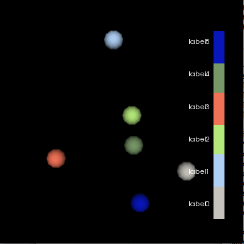
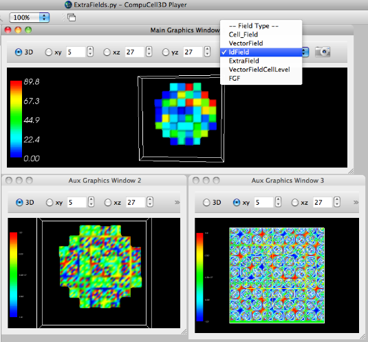

from vtk import *
from random import random
import os,string,sys,math
try:
VTK_DATA = os.environ['VTK_DATA']
except KeyError:
VTK_DATA = '../../../vtkdata/'
argc = len(sys.argv)
print 'argc=',argc
#if argc < 2:
# print 'Usage: ',sys.argv[0],' <ntps>'
# raise ValueError, 'Too few input args'
idx=1
npts = string.atoi(sys.argv[idx])
#npts = 6 # to match the hard-coded LUT below
idx=idx+1
print 'npts = ',npts
vmath = vtkMath()
#vmath.RandomSeed(1234)
# I can't stand the default red->blue; make a blue->red LUT
lut = vtkLookupTable()
#lut.SetHueRange(0.667,0.0) # make a blue->red LUT
#lut.SetTableRange(double min,double max)
#lut.SetValueRange(double min,double max)
# actually - construct custom LUT (e.g. based on user's cell type colors)
lut.SetNumberOfTableValues(npts)
lut.SetNumberOfColors(npts)
# hard-coded
"""
lut.SetTableValue(0, 0,0,1,1) # SetTableValue (vtkIdType indx, double r, double g, double b, double a=1.0)
lut.SetTableValue(1, 1,0,0,1)
lut.SetTableValue(2, 0,1,0,1)
lut.SetTableValue(3, 1,1,0,1)
lut.SetTableValue(4, 0,1,1,1)
lut.SetTableValue(5, 1,1,1,1)
"""
for idx in range(npts):
lut.SetTableValue(idx, random(),random(),random(),1)
lut.Build()
pts = vtkPoints()
verts = vtkCellArray()
#center = (0,0,0)
#pts.InsertPoint(0,0,0,0)
scalars = vtkFloatArray()
scalars.SetNumberOfValues(npts)
scalars.SetName("cellType")
R = 1
for idx in range(0,npts):
x = vmath.Random(-R,R)
y = vmath.Random(-R,R)
z = 0
print idx,') x,y,z=',x,y,z
scalars.SetValue(idx,idx)
pts.InsertPoint(idx,x,y,z)
verts.InsertNextCell( 1 )
verts.InsertCellPoint(idx)
cellPD = vtkPolyData()
cellPD.SetPoints(pts)
cellPD.SetVerts(verts)
cellPD.Update()
#cellPD.GetCellData().SetScalars(scalars)
cellPD.GetPointData().SetScalars(scalars)
balls = vtkSphereSource()
balls.SetRadius(.1)
balls.SetPhiResolution(10)
balls.SetThetaResolution(10)
glyphPoints = vtkGlyph3D()
glyphPoints.SetInput(cellPD)
glyphPoints.SetSource(balls.GetOutput())
glyphPoints.SetScaleModeToDataScalingOff()
mapper = vtkPolyDataMapper()
mapper.SetInput(glyphPoints.GetOutput())
#mapper.SetScalarModeToUseCellFieldData()
#mapper.ScalarVisibilityOn()
#mapper.SetColorModeToMapScalars()
#mapper.SelectColorArray("cellType")
mapper.SetScalarRange(0,npts-1)
mapper.SetLookupTable(lut)
mapper.Update()
bds = cellPD.GetBounds()
print 'bds = ',bds
cellsActor = vtkActor()
cellsActor.SetMapper(mapper)
ren1 = vtkRenderer()
renWin = vtkRenderWindow()
renWin.AddRenderer(ren1)
iren = vtkRenderWindowInteractor()
iren.SetRenderWindow(renWin)
#------------------------
scalarBar = vtkScalarBarActor()
scalarBar.SetLookupTable(lut)
#scalarBar.SetTitle("Stress")
scalarBar.GetPositionCoordinate().SetCoordinateSystemToNormalizedViewport()
#scalarBar.GetPositionCoordinate().SetValue(0.8,0.05)
scalarBar.SetOrientationToVertical()
scalarBar.SetWidth(0.1)
scalarBar.SetHeight(0.9)
scalarBar.SetPosition(0.88,0.1)
#scalarBar.SetLabelFormat("%-#6.3f")
scalarBar.SetLabelFormat("%-#3.1f")
scalarBar.SetLabelFormat("")
scalarBar.SetLabelFormat(" ")
scalarBar.GetLabelTextProperty().SetColor(1,1,1)
#scalarBar.GetTitleTextProperty().SetColor(1,0,0)
# in viewport coords; i.e. not affected by window size
print 'sbar pos =',scalarBar.GetPosition() # (0.88, 0.10000000000000001)
print 'sbar pos2 =',scalarBar.GetPosition2() # (0.10000000000000001, 0.90000000000000002)
print 'sbar width =',scalarBar.GetWidth() # 0.1
print 'sbar height =',scalarBar.GetHeight() # 0.9
ren1.AddActor2D(scalarBar)
#-----------
# assume a vertical scalarbar along right-hand side of viewport
labelYDelta = scalarBar.GetHeight()/npts
labelYDelta = 0.8/npts
labelY0 = 0.15
labelX0 = 0.78
for idx in range(npts):
myName = 'label' + str(idx)
textActor = 'textActor' + str(idx)
textActor = vtk.vtkTextActor()
#textActor.ScaledTextOn()
textActor.SetTextScaleModeToViewport()
#textActor.SetDisplayPosition(100, 100) # integer coords
#textActor.SetPosition(0.5, 0.5)
textActor.SetInput(myName)
textActor.GetPositionCoordinate().SetCoordinateSystemToNormalizedViewport()
textActor.GetPositionCoordinate().SetValue(labelX0, labelY0 + idx*labelYDelta)
# Set coordinates to match the old vtkScaledTextActor default value
#textActor.GetPosition2Coordinate().SetCoordinateSystemToNormalizedViewport()
#textActor.GetPosition2Coordinate().SetValue(0.6, 0.1)
#textActor.GetPosition2Coordinate().SetValue(0.8, 0.5)
tprop = textActor.GetTextProperty()
tprop.SetFontSize(12)
tprop.SetFontFamilyToArial()
#tprop.SetJustificationToCentered()
#tprop.BoldOn()
#tprop.ItalicOn()
#tprop.ShadowOn()
tprop.SetColor(1, 1, 1)
ren1.AddActor2D(textActor)
#------------------------
ren1.AddActor(cellsActor)
#ren.SetBackground(1,1,1)
renWin.SetSize(300,300)
renWin.SetSize(400,400)
#ren.GetActiveCamera().Zoom(1.4)
renWin.Render()
w2i = vtkWindowToImageFilter()
w2i.SetInput(renWin)
jpgw = vtkJPEGWriter()
jpgw.SetInput(w2i.GetOutput())
jpgw.SetFileName("foobar.jpg")
#jpgw.Write()
#iren.Start()

In the above image, we simply show what scalarbars might look like for various sized windows and scalar ranges. It turns out that having exponential notation on one or more of the scalar values causes the font to be scaled down considerably (bad). The bottom 2 windows are displaying 3D and 2D renderings of the "ExtraField scalar field that was computed in the Python steppable (in examples_PythonTutorial/ExtraFields).